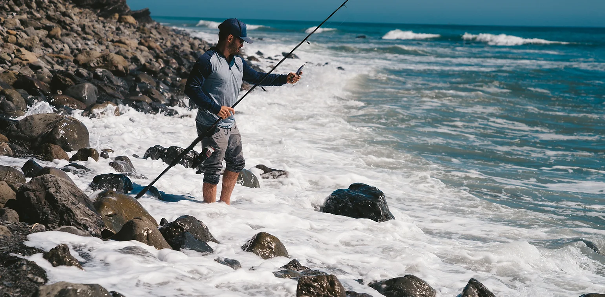

Why Howard's?
Howard's Lakeside General Store has been a family-owned gem in the community for decades. Even with our recent change in management, our commitment to quality remains strong. We offer a wide range of services tailored to fishing enthusiasts, including professional respooling, live bait selection (from redworms to minnows), and cold bait options like shad and liver tubs.

Service With a Local Smile
At Howard's, we pride ourselves on delivering the best local experience. Skip the impersonal big box stores and enjoy the welcoming atmosphere, friendly service, and the charm of doing business with your neighbors. We're here to keep the good times rolling, whether you're gearing up for a day at the lake or just stopping by for supplies.